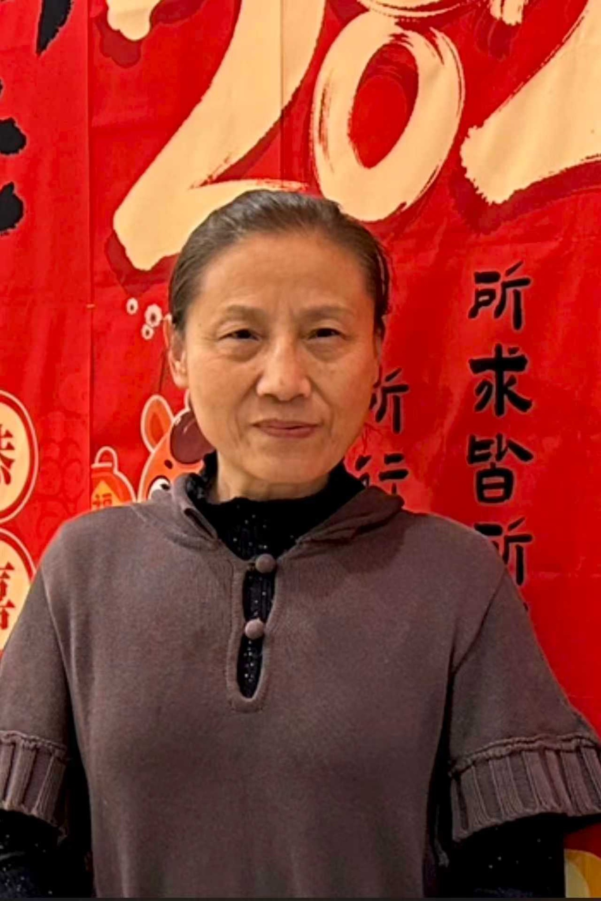
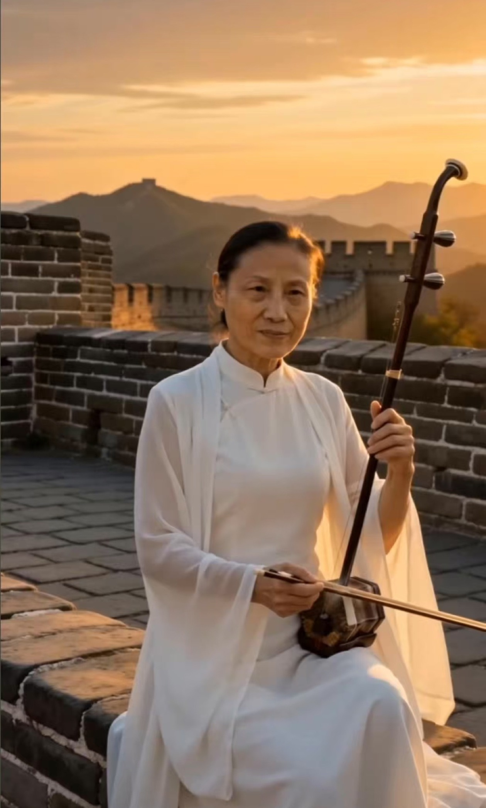

AI Art Direction · Image & Video Generation · Creative Iteration
Amy Zhao
AI Creative Portfolio
Selected work demonstrating AI image and video generation, visual continuity, creative direction, iterative refinement, and commercial-ready visual storytelling.
01 · Visual & Character Continuity
A Magnificent Journey Along the Great Wall
AI Cinematic Character Story
Character-led cinematic storytelling focused on continuity across styling, environment, lighting, mood and image-to-video motion.
02 · Character Consistency
Strings on the Great Wall
AI Erhu Performance Film
Built from a real reference photo of the performer. Across many shots and expressions, the face stays recognizably the same person — text prompt → AI image → image-to-video → final edit.
03 · Real Person → AI Character
Face & Character Consistency
Real reference photos beside the AI characters built from them. Facial identity, features and styling are held consistent from still image to cinematic video.
Real Reference Photo
AI Character — Great Wall Portrait

Real Reference Photo

AI Character — Erhu on the Great Wall
04 · Execution & Process
Iterative Refinement
A real-estate visual was reviewed for anatomy, composition and continuity. An unnatural hand/body interaction was identified; prompt direction and character positioning were refined while preserving the architecture, sunset lighting and premium mood.
Generate visual direction
Identify anatomy & continuity issue
Refine prompt & positioning
Select commercial-ready output
05 · AI Video Production
Luxury Real Estate Cinematic Video
Architectural Visualization → Image-to-Video → Final Edit
Premium real-estate storytelling using AI-generated visuals, controlled cinematic motion, visual review and final editing.
06 · Commercial Visuals
Brand & Product Imagery
Fragrance Visual

LUNIVIA Foundation

LUNIVIA Eyeshadow
Workflow
Structured Creative Execution
© 2026 Amy Zhao · AI Creative Portfolio. Original creative work presented for portfolio review.